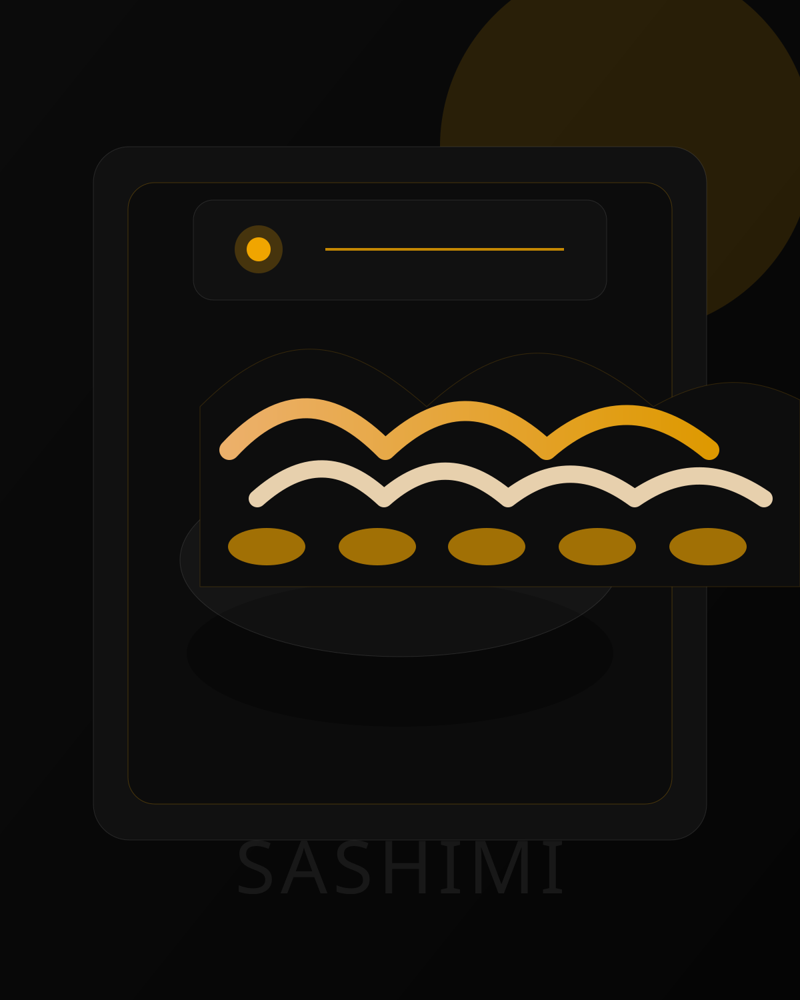
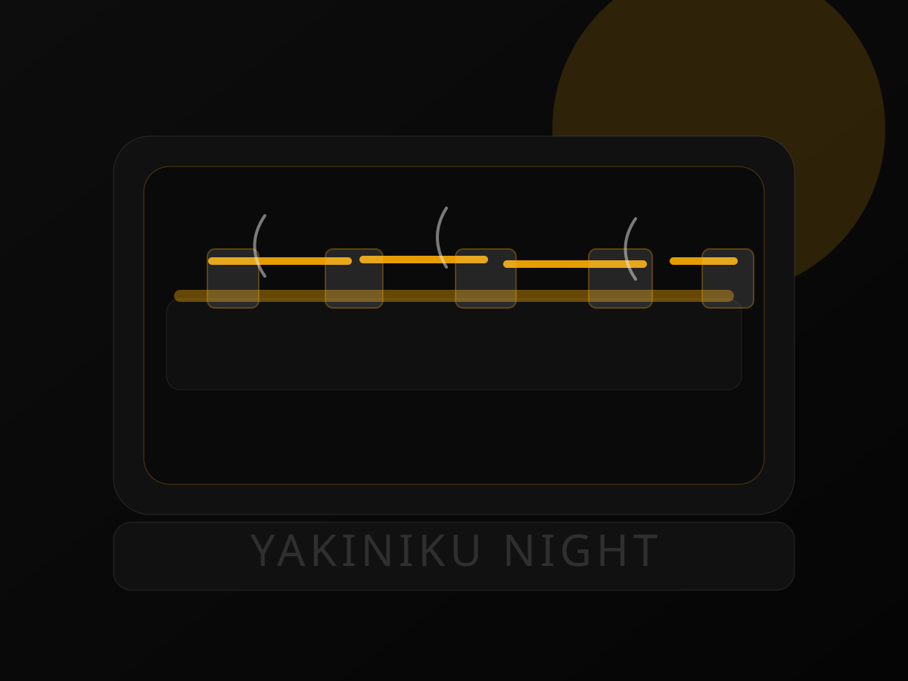
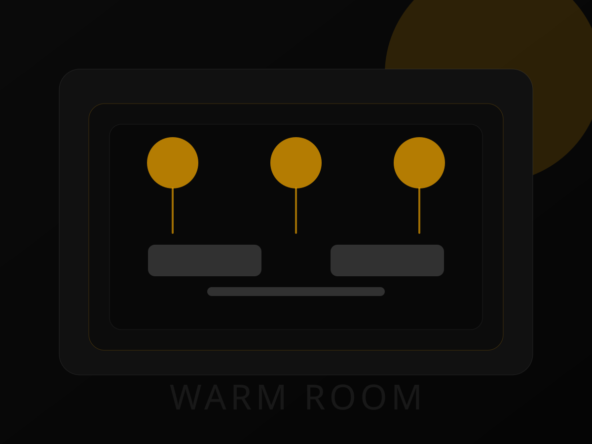
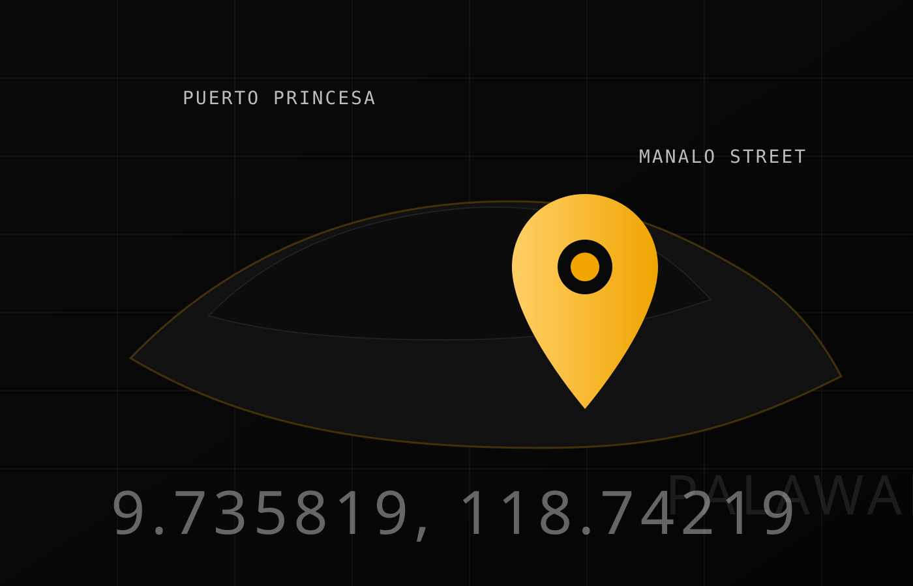

Fujisan Restaurant
Japanese-owned dining in Puerto Princesa with the dishes guests keep naming first: tuna sashimi, gyoza, yakiniku, tempura, ramen, and classic sushi rolls.
Japanese-owned, local in pace, generous in spirit
Fujisan sits on Manalo Street in Puerto Princesa and has built its name around straight-ahead Japanese comfort food. Public descriptions and reviews point to a casual room, attentive service, and a menu that leans into the plates people actually order again: sashimi, tempura, gyoza, yakiniku, sushi, and noodles.
Guests frequently describe it as a place for value-driven, filling meals.
The dining room is known for its all-you-can-eat and a la carte options.
The Fujisan mood
Three visual notes from the room, the grill, and the plate. The palette stays dark and warm so the amber details carry the same late-evening energy as the restaurant itself.



Call ahead for a smoother seat
Fujisan does not need a booking engine to feel welcoming. If you are planning a dinner, a family lunch, or a group stop after exploring Puerto Princesa, use the number below and head straight to Manalo Street.
Manalo Street, Puerto Princesa, Palawan
Verified map coordinates place Fujisan in Puerto Princesa at approximately 9.735819, 118.74219, which matches the city and not Manila. The pin sits a short distance from the Rizal Avenue side of town according to public reviews.

- Address Manalo Street, Puerto Princesa, Palawan 5300, Philippines
- Phone +63 947 536 9582
- Coordinates 9.735819, 118.74219
- Cuisine Japanese, sushi, seafood, grill items